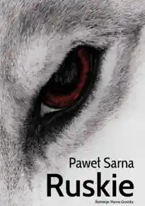

2024Tom poetycki
Ruskie
Tom nagrodzony w XVII Ogólnopolskim Konkursie na Autorską Książkę Literacką – Świdnica 2024.
Miejska Biblioteka Publiczna im. C. K. Norwida w Świdnicy · Świdnica, 2024
ISBN 978-83-959714-6-4